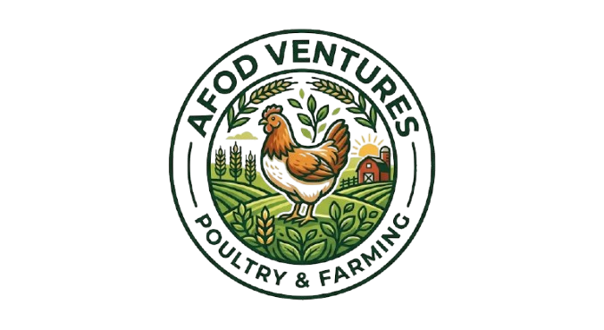
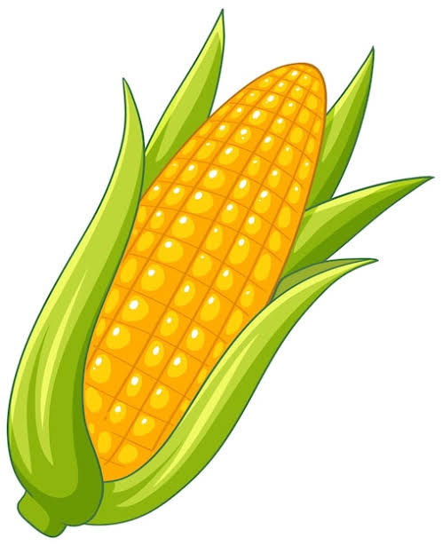
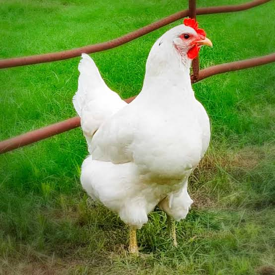
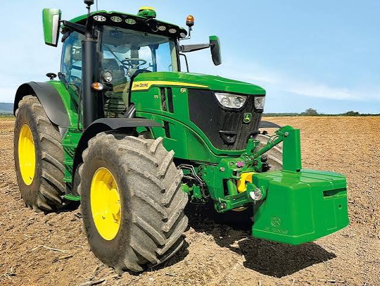
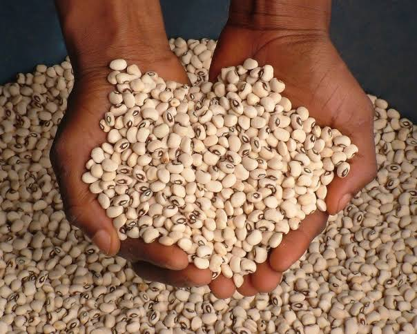
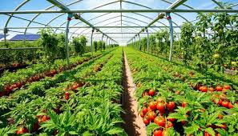
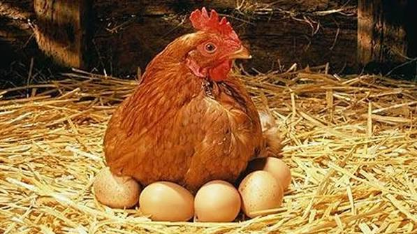
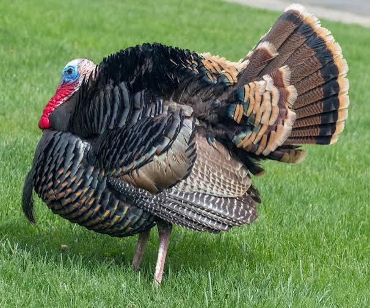
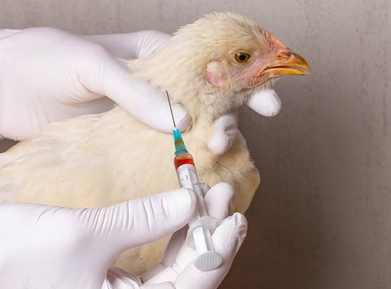

Succession sowing for max yield
Continuous sowing boosts revenue and productivity.

AFOD VENTURES
Maize, rice, cassava & more

Broilers, layers, local

Tractors, sprayers, pumps
Organic, NPK, herbicides
Get everything you need to launch your farm successfully.

High-yield varieties & fertilizer schedule.
Nursery, transplanting, water management.

Land prep, planting, processing.

Staking, pruning, pest management.
Housing, feeding, vaccination, marketing.

Lighting, nutrition, egg collection.

Free-range, breeding, disease management.

Schedules & biosecurity for healthy flocks.

Use mulch and drip irrigation to save water.

Provide 16 hours of light for consistent egg production.

Rotate legumes with cereals to maintain soil fertility.

Test your soil before planting to choose the right fertilizer.

Continuous sowing boosts revenue and productivity.

Pro tips for tons of fruit – eating, canning, market.
Optimize egg production with proper nutrition.